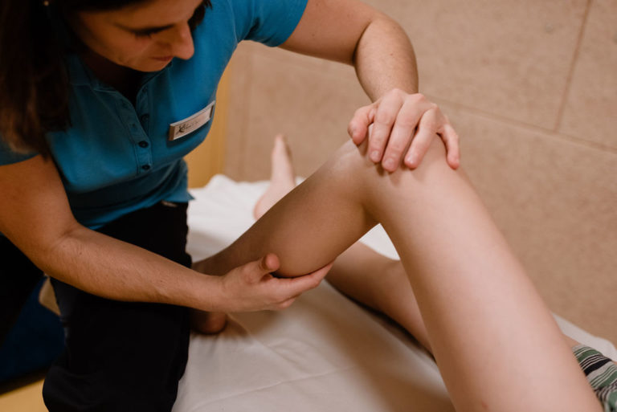

01

Massage
Klassische Massage & Sportmassage
Die klassische Massage verbessert Durchblutung und Stoffwechsel, löst Verspannungen und reduziert Schmerzen in der Muskulatur. Die Sportmassage geht gezielt auf belastete Strukturen ein – zur Vorbereitung auf den Wettkampf oder zur Regeneration danach.